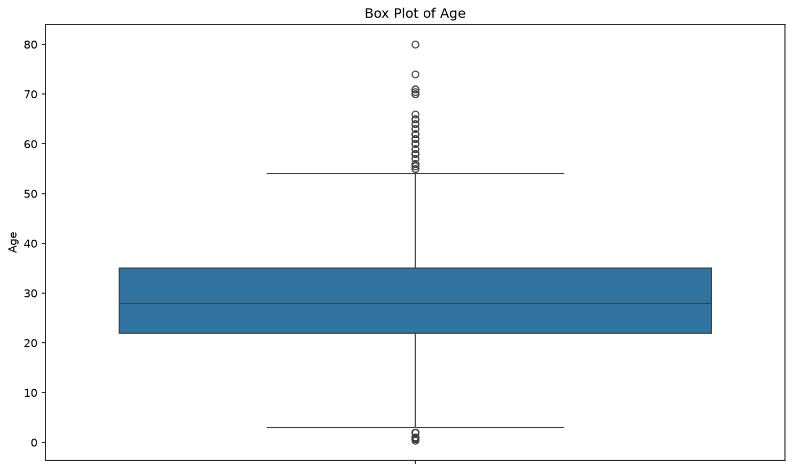
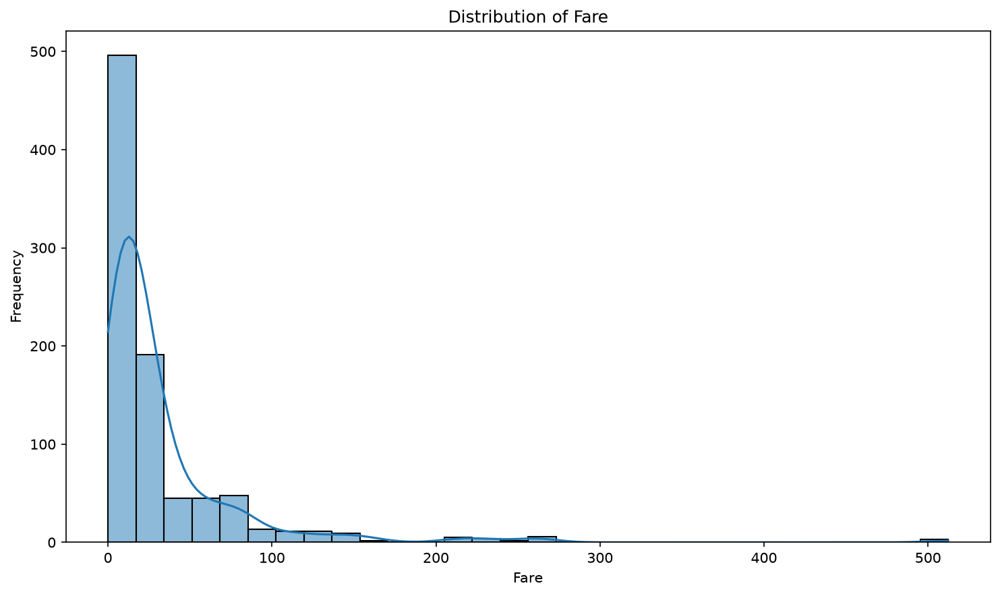
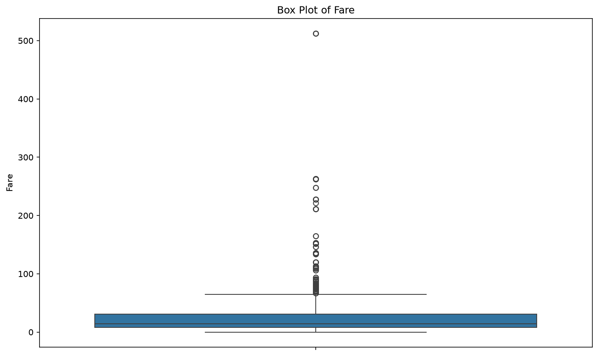
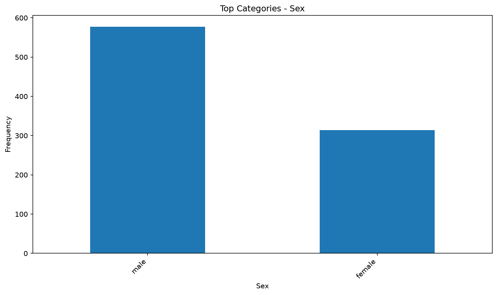
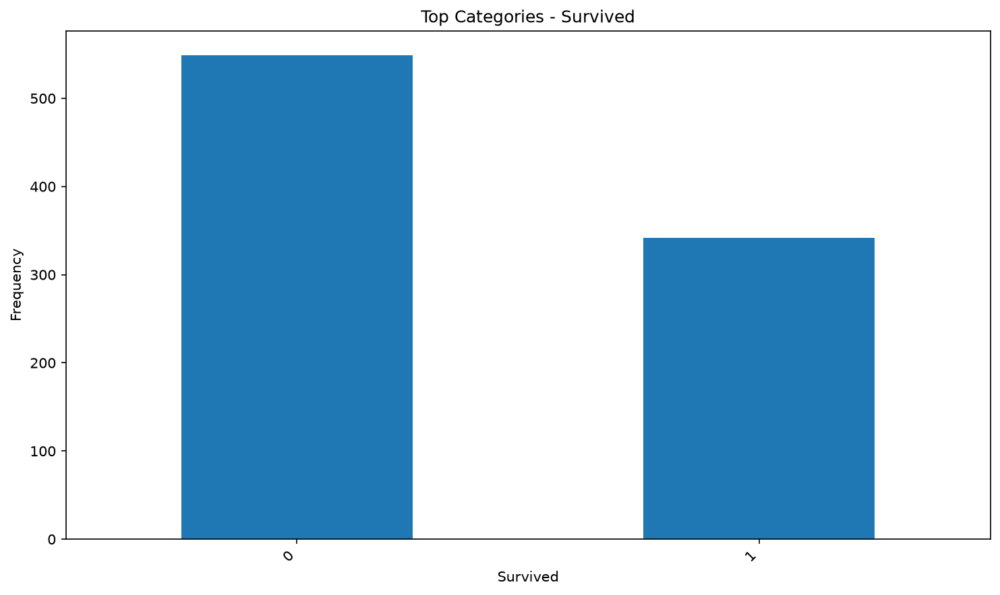
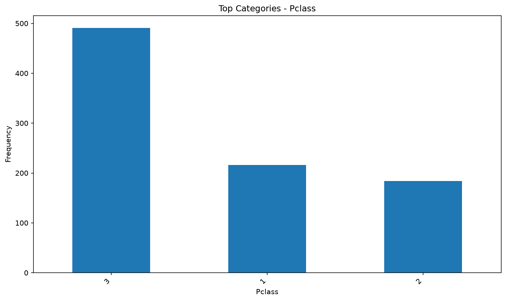
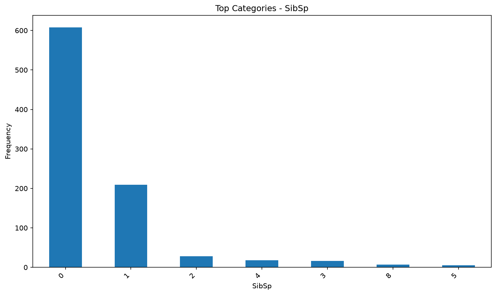
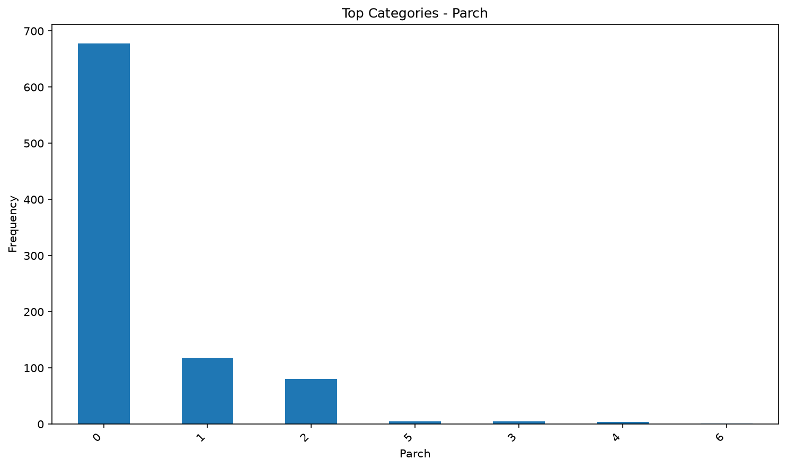
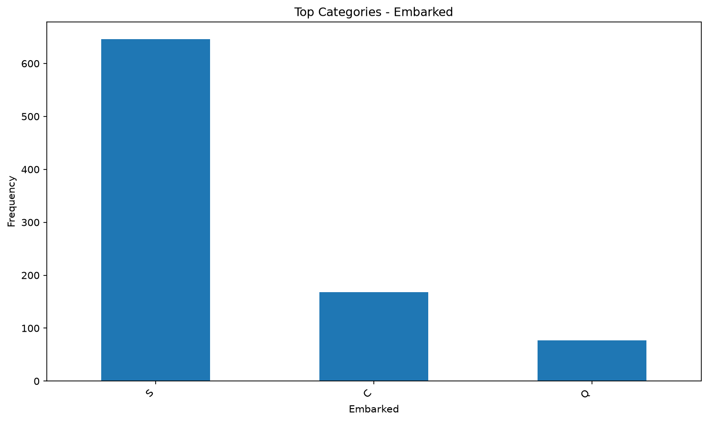

Dataset Summary
This section provides a high-level overview of the dataset.
Rows
891
Columns
12
Numerical
7
Categorical
5
Missing Cells
0
Duplicates
0
Duplicate Analysis
Duplicate rows: 0
Duplicate percentage: 0.0%
Missing Value Analysis
No records available.
Data Type Analysis
| column | data_type | non_null | unique_values |
|---|---|---|---|
| PassengerId | int64 | 891 | 891 |
| Survived | int64 | 891 | 2 |
| Pclass | int64 | 891 | 3 |
| Name | str | 891 | 891 |
| Sex | str | 891 | 2 |
| Age | float64 | 891 | 88 |
| SibSp | int64 | 891 | 7 |
| Parch | int64 | 891 | 7 |
| Ticket | str | 891 | 681 |
| Fare | float64 | 891 | 248 |
| Cabin | str | 891 | 147 |
| Embarked | str | 891 | 3 |
Numerical Statistics
| column | count | mean | std | min | 25% | 50% | 75% | max |
|---|---|---|---|---|---|---|---|---|
| PassengerId | 891.0 | 446.000000 | 257.353842 | 1.00 | 223.5000 | 446.0000 | 668.5 | 891.0000 |
| Survived | 891.0 | 0.383838 | 0.486592 | 0.00 | 0.0000 | 0.0000 | 1.0 | 1.0000 |
| Pclass | 891.0 | 2.308642 | 0.836071 | 1.00 | 2.0000 | 3.0000 | 3.0 | 3.0000 |
| Age | 891.0 | 29.361582 | 13.019697 | 0.42 | 22.0000 | 28.0000 | 35.0 | 80.0000 |
| SibSp | 891.0 | 0.523008 | 1.102743 | 0.00 | 0.0000 | 0.0000 | 1.0 | 8.0000 |
| Parch | 891.0 | 0.381594 | 0.806057 | 0.00 | 0.0000 | 0.0000 | 0.0 | 6.0000 |
| Fare | 891.0 | 32.204208 | 49.693429 | 0.00 | 7.9104 | 14.4542 | 31.0 | 512.3292 |
Data Visualizations
Automatically generated visualizations for the dataset.
Histogram Age

Boxplot Age

Histogram Fare

Boxplot Fare

Bar Sex

Bar Survived

Bar Pclass

Bar Sibsp

Bar Parch

Bar Embarked

Cleaning History
| timestamp | module | operation | description | rows_affected | columns_affected | status |
|---|---|---|---|---|---|---|
| 2026-08-18 13:56:23 | LOADER | LOAD_DATASET | Dataset loaded successfully from datasets/Titanic-Dataset.csv. | 891 | 12 | SUCCESS |
| 2026-08-18 13:56:23 | DATATYPE | AUTO_CONVERT | Automatic data type conversion completed. | 0 | 0 | SUCCESS |
| 2026-08-18 13:56:23 | MISSING_VALUES | HANDLE_MISSING_VALUES | Missing values handled successfully. | 866 | 0 | SUCCESS |
| 2026-08-18 13:56:23 | DUPLICATES | REMOVE_DUPLICATES | Duplicate rows removed successfully. | 0 | 0 | SUCCESS |
| 2026-08-18 13:56:27 | SAVER | SAVE_DATASET | Cleaned dataset saved to datamop_output\cleaned_data\Titanic-Dataset_cleaned.csv. | 891 | 12 | SUCCESS |